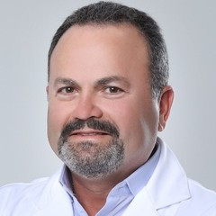

Início · Cirurgias · Lifting facial
Lifting facial: o que é e como é a recuperação.
“Plástica no rosto”, “lift facial” e “rejuvenescimento facial” estão na lista de procedimentos da clínica. Aqui está a informação geral sobre o lifting; a indicação é individual, definida em consulta.

Entenda
O que é o lifting facial
O lifting facial, também chamado de ritidoplastia, é a cirurgia que reposiciona os tecidos da face e do pescoço e retira o excesso de pele.
“Rejuvenescimento facial” é um termo mais amplo; o lifting é uma das cirurgias desse grupo.
A flacidez, a qualidade da pele, a saúde e o que a pessoa deseja definem se a cirurgia faz sentido e qual técnica usar.
A queixa
Os sinais que costumam levar à consulta
- Flacidez no contorno da mandíbula.
- Pele sobrando no pescoço.
- Sulcos mais marcados entre o nariz e a boca.
- Queda dos tecidos da região das bochechas.
Nem sempre a resposta é cirurgia: a avaliação em consulta define o caminho.
Na consulta
A expectativa: você, e não uma cópia
“Claro que você pode se inspirar, isso é natural, mas não queira ser uma cópia […]”Dr. Gilvan Pinho · legenda de uma publicação no Instagram
O objetivo de cada caso é conversado em consulta, com as possibilidades e os limites da cirurgia.
Expectativa
Onde ficam as cicatrizes
As incisões costumam acompanhar o contorno da orelha e se estender ao couro cabeludo; a extensão depende da técnica escolhida para o caso.
O desenho é explicado em consulta, e a cicatrização varia de pessoa para pessoa.
Pós-operatório
Recuperação
- Primeiros diasCurativo, cabeça elevada e repouso relativo, conforme a orientação da equipe.
- Inchaço e roxosSão esperados e diminuem ao longo das semanas.
- Retorno às atividadesGradual, com prazos orientados nas revisões.
Dúvidas frequentes
Perguntas comuns
Lifting facial e rejuvenescimento facial são a mesma coisa?
“Rejuvenescimento facial” é um termo amplo; o lifting é uma das cirurgias desse grupo. O que se aplica ao seu caso é definido em consulta.
Existe idade certa para o lifting?
Não há uma idade única: pesam a flacidez, a qualidade da pele e a saúde. A avaliação é individual.
O lifting deixa cicatriz?
Sim, em geral ao redor das orelhas e no couro cabeludo; a extensão depende da técnica e do caso.
Agende
Uma conversa com o Dr. Gilvan, na Renascence.
Atendimento com hora marcada no Edf. Alpha Medical Center, em Alphaville I. Fale com a equipe pelo WhatsApp (71) 98205-7627 ou pelo telefone (71) 3901-1631.